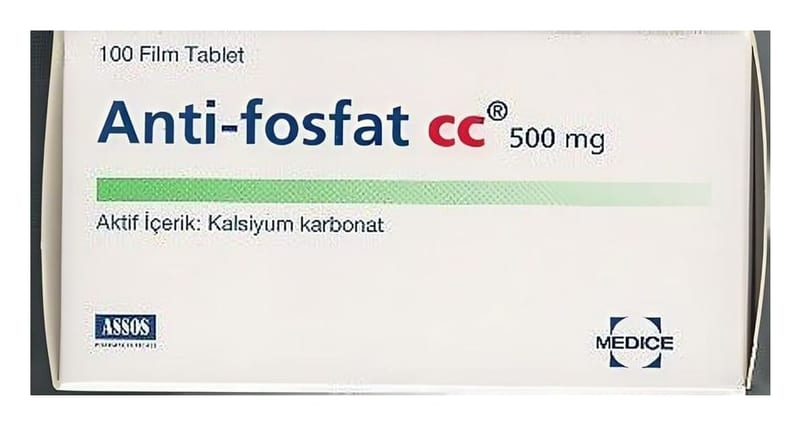

Anti-Fosfat Cc 500 mg Tablet, 100 Adet

Ne için kullanılır
KT · Bölüm 1ANTI-FOSFAT CC®, tablet formunda, kalsiyum karbonat içeren fosfat bağlayıcı bir ajandır.
Böbrek yetmezliği olan, özellikle, düzenli diyaliz alan hastalarda kanda yüksek fosfat düzeyinin (hiperfosfatemi) tedavisinde kullanılır.
100 ve 180 film tablet içeren blister ambalajlarda ve karton kutu içerisinde, PVC/PVDC alüminyum folyo blister ambalajda kullanıma sunulmaktadır.